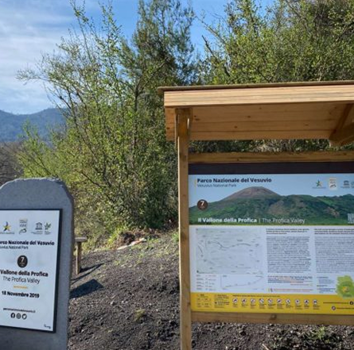

Esplora questa sezione ed indaga sulle attività che più si addicono ai tuoi interessi!

Attività:
Trakking (6 h)
Scopri la bellezza selvaggia del Vesuvio con un’esperienza di trekking tra sentieri vulcanici, panorami mozzafiato e natura incontaminata. Un percorso avventuroso alla scoperta del cratere più famoso d’Europa.
Giro in quad (5 h)
Vivi l’adrenalina di un tour in quad tra i paesaggi lunari del Vesuvio. Tra sterrati, boschi e scorci spettacolari, un’avventura off-road per esplorare il vulcano in modo unico e divertente.
Degustazione di Vini
Assapora i sapori autentici del territorio con una degustazione di vini locali ai piedi del Vesuvio. Un viaggio tra vitigni storici, profumi intensi e il gusto inconfondibile della tradizione campana.